The first town to visit would be Palmela. The most remarkable thing about this town is its castle, although the church of San Pedro is very beautiful. With its tiles on the walls and its paintings on the ceiling, it follows the line of many Portuguese churches in the area.
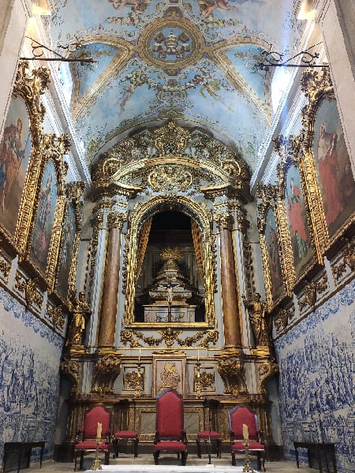

 The castle of Palmela is a large walled fortress that supported the castle of Saint George. In it you could make signals in case you needed help and a great line of towns could be seen from that height, being a special place to take panoramic photos of the area. Also inside there are the ruins of an old church before another church was erected inside. Possibly that church was prior to the castle.
The castle of Palmela is a large walled fortress that supported the castle of Saint George. In it you could make signals in case you needed help and a great line of towns could be seen from that height, being a special place to take panoramic photos of the area. Also inside there are the ruins of an old church before another church was erected inside. Possibly that church was prior to the castle.
It was originally built by the Arabs and had a defensive role as a citadel, between the 8th and 9th centuries, later greatly enlarged between the 10th and 12th centuries once the city was reconquered by the Christians.
The castle, at an elevation of 240 meters above sea level, has an irregular, organic polygonal floor plan (adapted to the terrain), with the walls reinforced by square and circular towers.
The evolution of Palmela's defensive perimeter can be understood by studying these walls, arranged in three levels of fences, without moats, separated by successive barriers:
 Palmela Castle: Gothic interior of the Church of Santiago de Palmela (15th century).
The internal line, dating back to the 12th and 13th centuries, includes the oldest wall, protected by two cylindrical towers and the keep, in which a cistern opens. This would have been remodeled in the 14th century, its structure reinforced and its height increased, crowned with battlements. Inside, a stone staircase connects the various floors.
The intermediate line, erected in the 15th century, is made up of more robust walls, where the parade ground, the Church of Santa María (erected in the 12th century and rebuilt in the Renaissance), the Convent and the Church of Santiago are inscribed. by Palmela, 14th century Gothic works.
the external line, built in the 17th century, integrated by then modern bastions, ravelins and tenallas, designed to resist artillery fire.
Palmela Castle: Gothic interior of the Church of Santiago de Palmela (15th century).
The internal line, dating back to the 12th and 13th centuries, includes the oldest wall, protected by two cylindrical towers and the keep, in which a cistern opens. This would have been remodeled in the 14th century, its structure reinforced and its height increased, crowned with battlements. Inside, a stone staircase connects the various floors.
The intermediate line, erected in the 15th century, is made up of more robust walls, where the parade ground, the Church of Santa María (erected in the 12th century and rebuilt in the Renaissance), the Convent and the Church of Santiago are inscribed. by Palmela, 14th century Gothic works.
the external line, built in the 17th century, integrated by then modern bastions, ravelins and tenallas, designed to resist artillery fire.
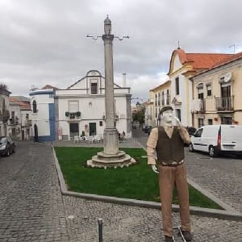
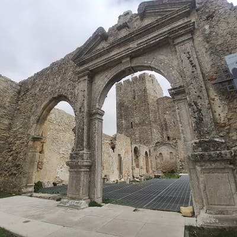
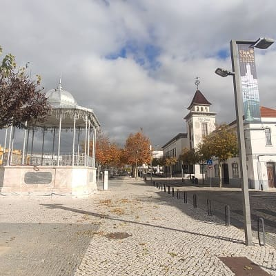
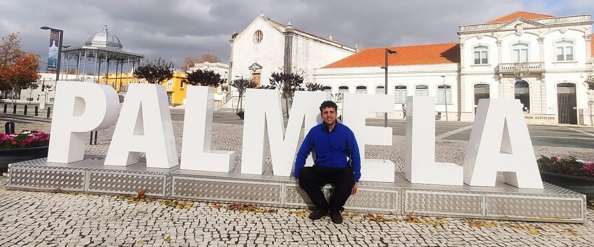
Then I went to Setúbal, an important city in the area that has a university and all the services of a big city. This was not always the case since before the fifteenth century, it was a town the size of others in the area such as Palmela seen before.
Setubal became important from the 15th century when it became the maritime capital of Portugal. Between that century and the 16th century when several members of royalty and nobility come to have residence in this city and the time of the discoveries of Portugal bring wealth and prosperity. From this, new religious buildings will be built such as the convent of Jesus. In the 16th century, the fort of San Felipe was built by Felipe II to shelter the Spanish troops since at that time, under the union of Felipe and Isabella of Portugal, he would reign throughout the peninsula.
After the earthquake of 1755 and that of 1858, above all, there would be damage to the cities and loss of population that would be recovered by the end of the 19th century. In the 20th century, due to fishing and other activities, it managed to recover a large population and grow and become one of the capitals of Portugal, becoming the capital of the district. He currently has a university.
As outstanding monuments, the Cathedral of Santa María da Graça which has the same structure as almost all the churches in the area, with painted transversal columns and a painted ceiling with different details in tiles.
Founded in the 13th century, the current building is a High Renaissance reconstruction with a Mannerist façade. Inside there are columns with frescoes, and tiles from the 17th and 18th centuries.
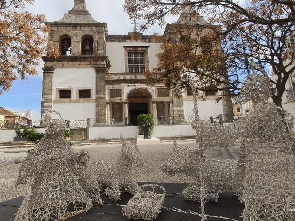
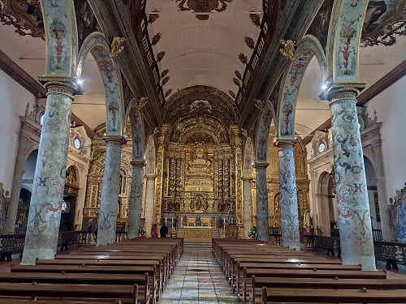
Other heritage elements are the convent of Jesus with the helical columns of the church, the church of San Julian and the town hall square. Finally, I would go to the great port of Setubal where military ships like the one in the image sometimes anchor, one of the most important ports in Portugal strategically speaking since it is within a bay, difficult to access in case of war. There I would eat at the Bombordo restaurant where they serve the largest typical fish grills in the area. For 15 euros they serve you all the dishes you can eat, however they start with the least expensive or most common fish and end with the delicacies of the sea such as sea bass or fresh tuna.
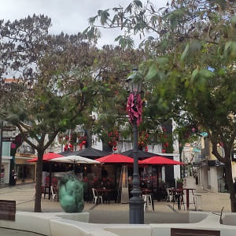
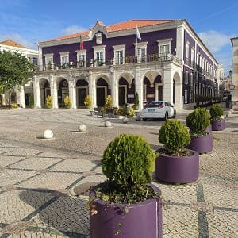
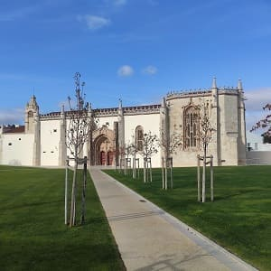
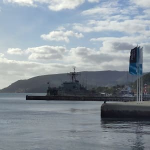
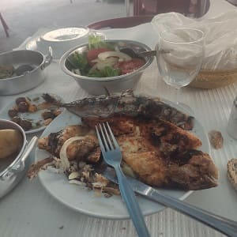
To end the day, visit the Sesimbra castle in the south, where you had to climb a road before reaching the town and from which you could have incredible views of the sea.
The medieval castle stands in a dominant position on a cliff, over a cove that constitutes a natural harbor on the Setúbal peninsula between the Tagus and Sado river estuaries, a few kilometers from Cape Espichel. It was built on a site occupied in prehistoric times. In the 9th century it was a Muslim settlement during the period of the Muslim occupation of Iberia, when it was known as Alcáçova. It would be conquered by different Arab peoples and at the beginning of the 13th century it would be taken under Sancho I. It had great strategic importance since all the ships coming from the south of the Atlantic could be seen as well as defending the coast from possible entries and incursions near the capital .
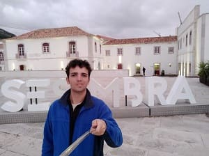
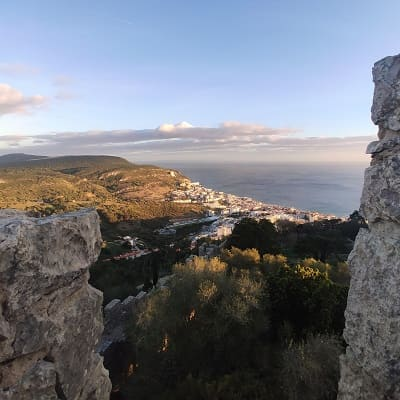
From the 16th century, once the conquest of the peninsula was finished, the castle would be abandoned since the incursions would mainly come from the mainland of the Spanish army.
In the 18th century, the church of Santa María was built inside and the walls would be fixed and reinforced against possible attacks from the sea, mainly from French troops since the English used to be allies.
 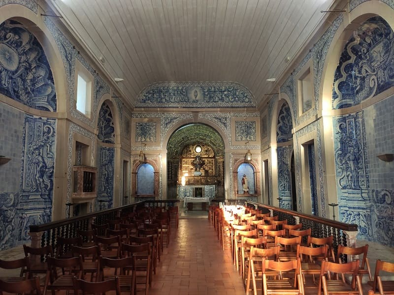
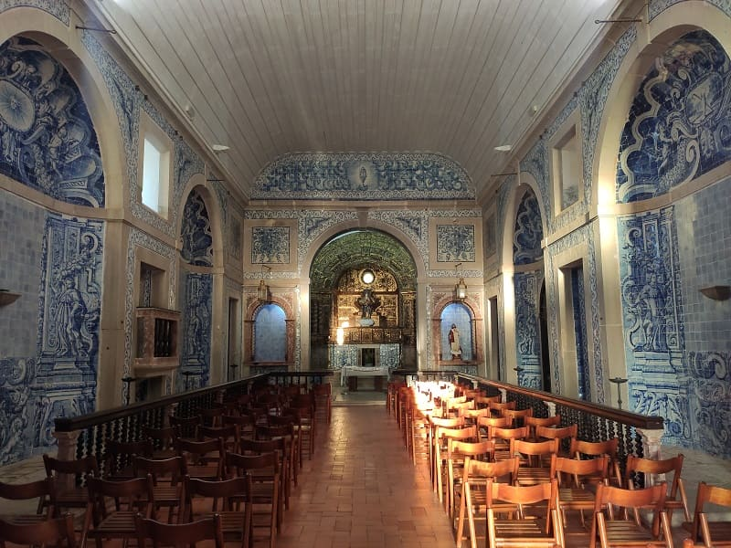
In the 20th century, the reconstruction works of the castle would begin.
To say that because my trip was at a time when there were hardly any tourists, I had no problems parking and going up that road, but in summer I suppose it will not be possible to do so.
In the town of Sesimbra I was able to walk along the beach and visit the fort of Santiago.
This fortress was built in the 17th century before the Spanish attacks in the Restoration War. It would develop in the shape of a star, with defensive bastions where artillery would be installed and with surveillance posts at different points. In the 18th century it would also serve as a summer residence. After the earthquake in Lisbon it would be abandoned due to the state in which it was left, even with the restoration works of that century and it would not be until the 20th century that it would begin to be restored first to convert it into a camp and then they would want to make a hotel due to the explosion of tourism in Portugal in the 1960s.
It would not be until 2011 when it would be completely restored and today it houses a museum and the tourist office. In the image the fort and the beach of Sesimbra.
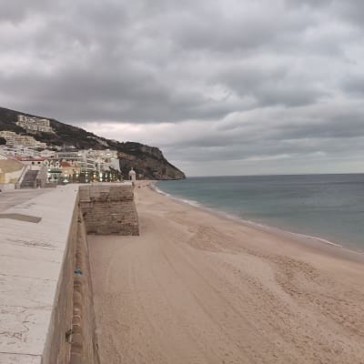
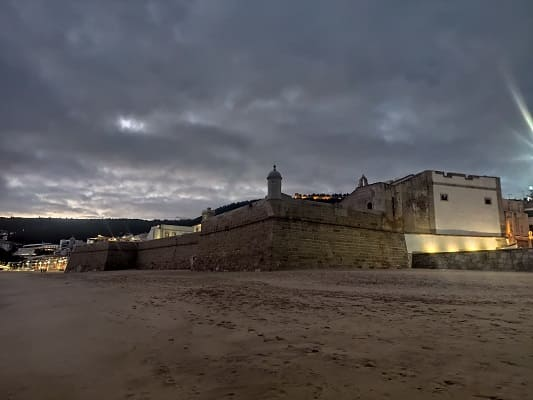
The town is quite beautiful and invites you to explore it taking a few walks.
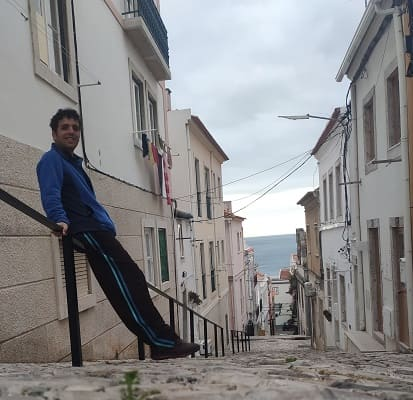
However, I do not recommend coming to this town just to go to the beach, because there are other better places for beaches and where you can park for free, since the entire town has to be parked and there are not many places. The beach is quite good but in the western part of Lisbon, in the Caparica area, right where I was staying, it is better, because the area is much longer and there are numerous accommodations.

© 2016 - All Rights Reserved - Designed by Sergio López Martínez
El sitio se mantiene gracias a la publicidad, por favor Desactiva Adblock para seguir navegando
He desactivado Adblock![[Valid RSS]](https://www.onepointsync.com/wp-content/uploads/2016/08/valid-rss-rogers.png "Validate my RSS feed")